Atlas Medical will use this blog to provide progress updates and highlight development milestones.
OEC Innovative Design Winners
Atlas Medical has a singular goal: prevent pressure injuries through the development of intelligent pressure redistribution systems. On January 20, Atlas Medical won first place in the Innovative Design category at the Ontario Engineering Competition and also took home the Social Awareness award. This success validates both the technological trajectory and the overall mission of Atlas Medical.
We are proud to bring more attention to preventing pressure injuries and to be given the opportunity to represent the University of Waterloo at the Canadian Engineering Competition in March.
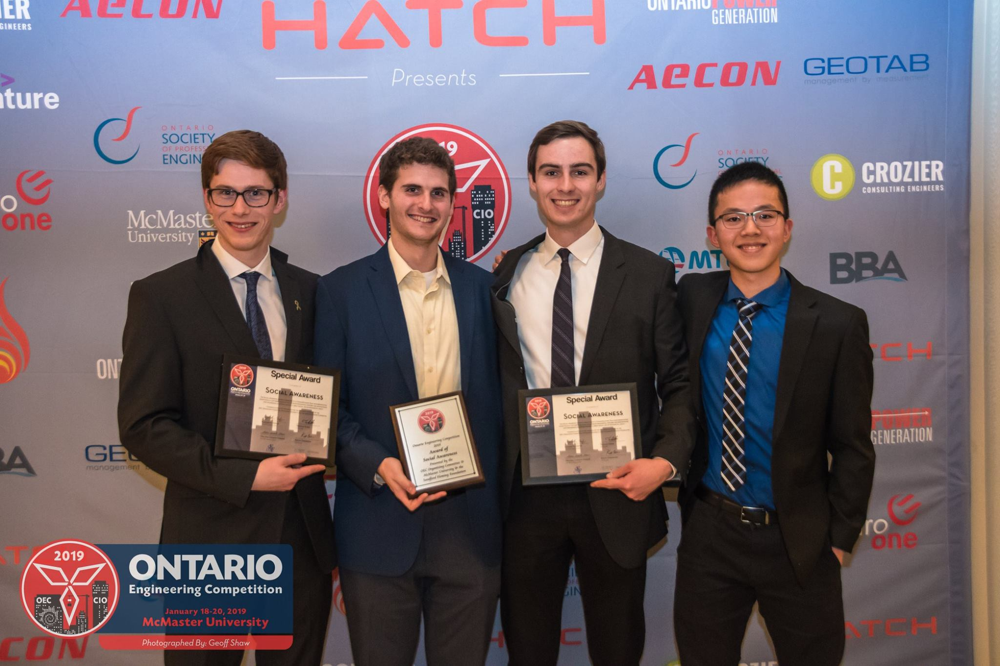
Sensor Build Day
On January 31, the Atlas Medical team undertook the build of its pressure sensor - a process that ended up taking 17 hours. The entire sensing array is 80” long, 36” wide, and contains 5,376 individual sensor elements. The build is documented in the images below.
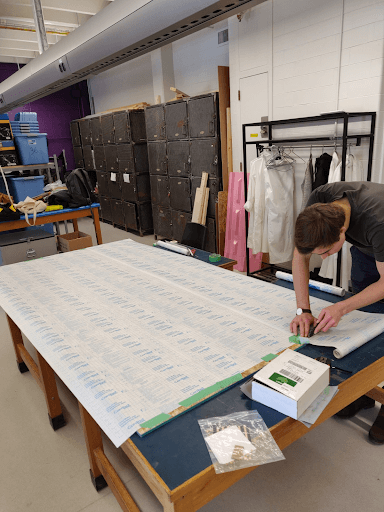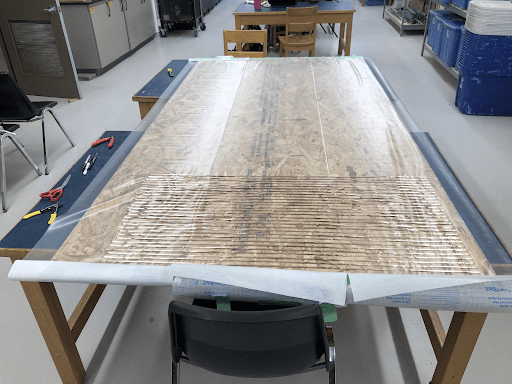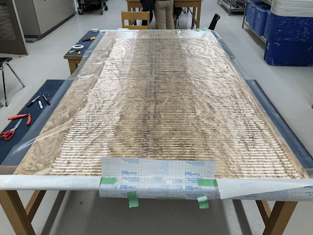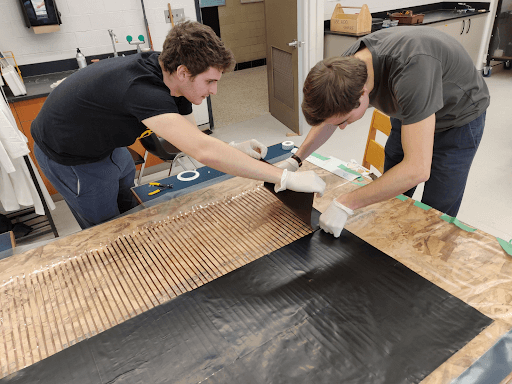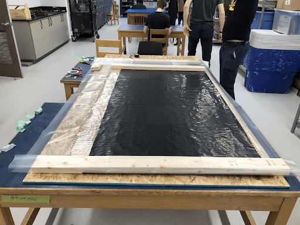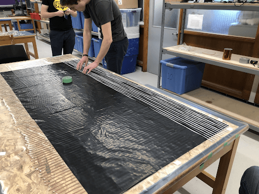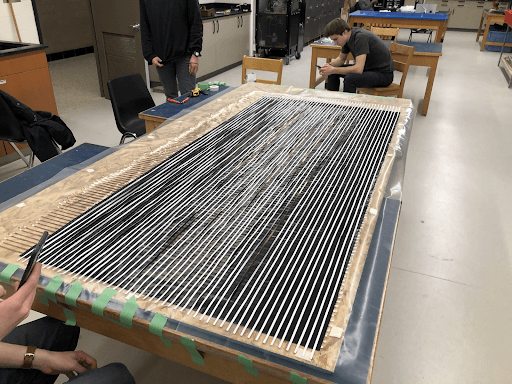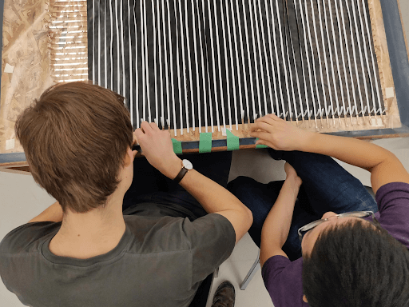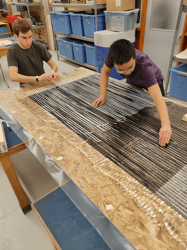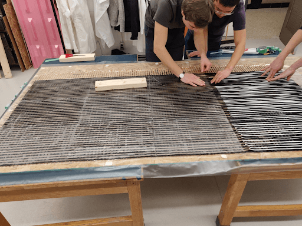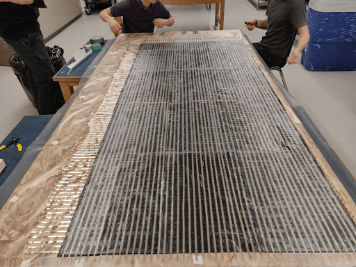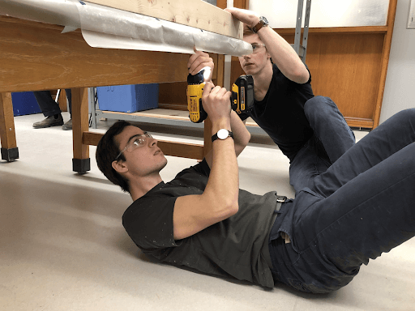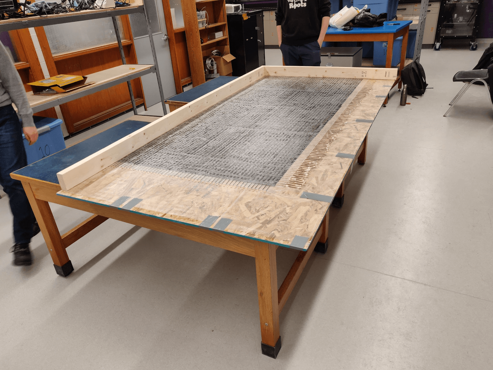
Canadian Engineering Competition
Atlas Medical took home third place at the Canadian Engineering Competition in the Innovative Design category. We are incredibly proud of this achievement given the timeframe we had to improve our prototype between OEC and CEC. At CEC, we were able to demonstrate the functional sensing matrix to a panel of judges, who were impressed with the results of the sensor and the progress on the system so far.
Our next step; build all the pneumatics!
Pneumatics PCB
Our Pneumatics Control Board arrived today!
The solenoid valves that we are using have the easiest control and mechanical interface of any industrial or hobby valves that we could source in a reasonable amount of time. Unfortunately, they draw a large amount of power; 6 watts at 12 VDC. That is 500 mA of current! Originally, we were going to place all of our pneumatics electronics on a protoboard, however, this posed some safety concerns. We needed a way to safely route and control this amount of current and we decided that a protoboard is not the best solution due to messy wiring and lots of exposed connections.
For this reason, we opted to design another PCB (on top of the other two custom boards we already have) to safely control the valves. We call this one the PCB PCB (pneumatics control board printed circuit board).
The results are awesome! The board looks super cool and after a first bring-up, works as intended!
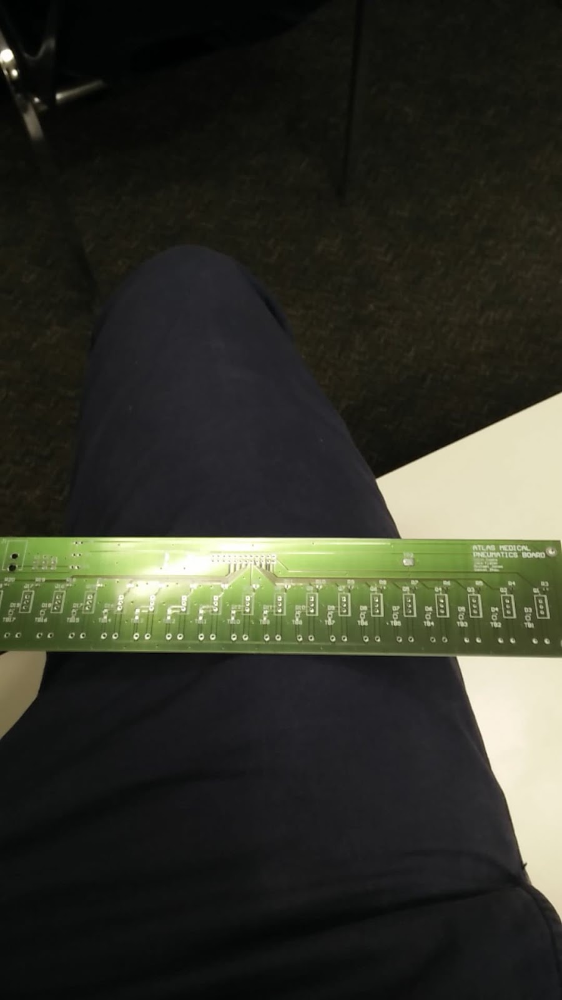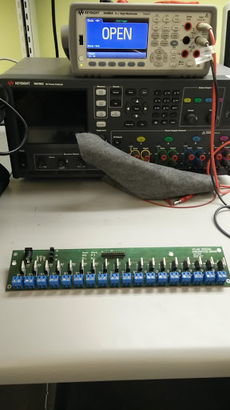
Pneumatics Build
At the outset of this project, we recognized that we needed the ability to have fine control over different regions of the air mattress that we purchased.
The mattress we purchased has 17 individual air cells, with the three air cells located at the head of the bed “shorted” together. So, how does one obtain fine control? We decided early on that we would need to have control over each of the individual pouches. This is the maximum amount of resolution available with the mattress that we purchased. To control each individual pouch, we purchased tubing and connected each pouch to its own solenoid valve.
We are able to electronically control the solenoid valves with our Pneumatics Control Board and an Arduino Mega. The Arduino outputs a high or low voltage to the gate of a power MOSFET to either open or close the MOSFET, acting as a switch. The MOSFET is mounted on the Pneumatics Control Board and when it closes it completes a single solenoid valve circuit, allowing current to flow through the valve and thereby actuating it.
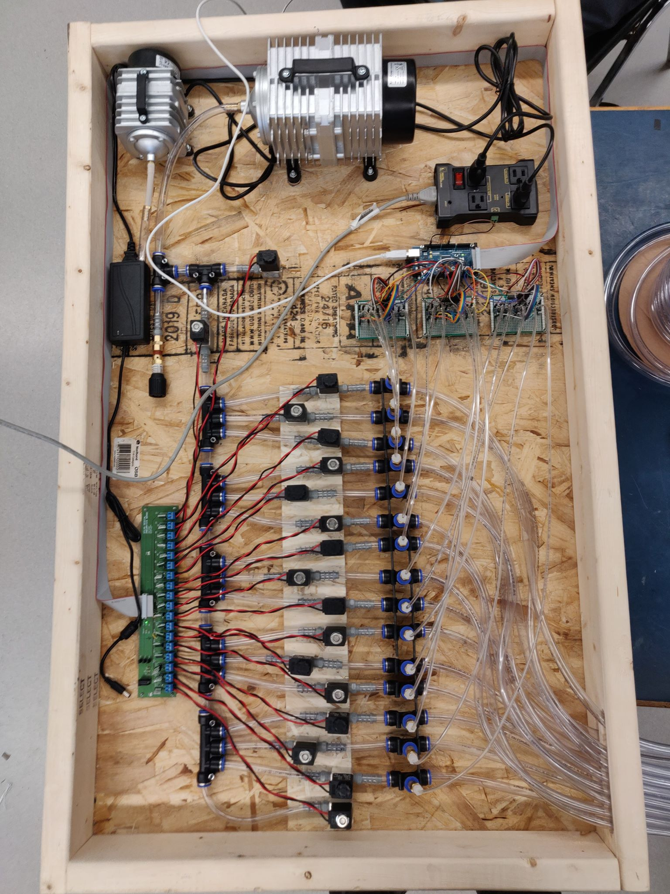
The Arduino also has electronic control over the air pump that is used to actually fill the pouches. With control over each individual piece of the system, we are able to set the air pressures in the cells precisely and integrate it elegantly into a feedback loop to continuously regulate pressure across a patient’s body.
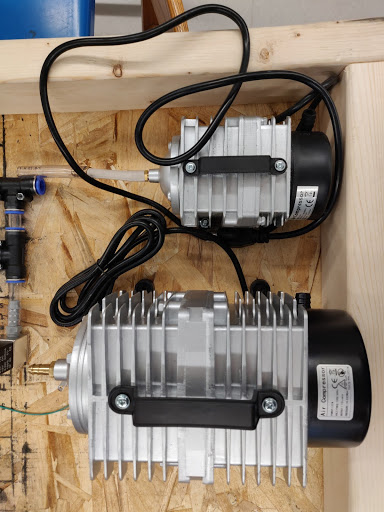
To bring everything together we built a wooden "pneumatics arena" in which we mounted our hardware. To route tubing from the pneumatics arena to the bed we drilled slots in our 2x4 pieces of wood.
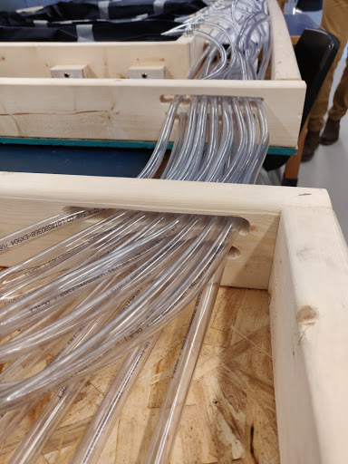
All of these changes make our system hardware complete!
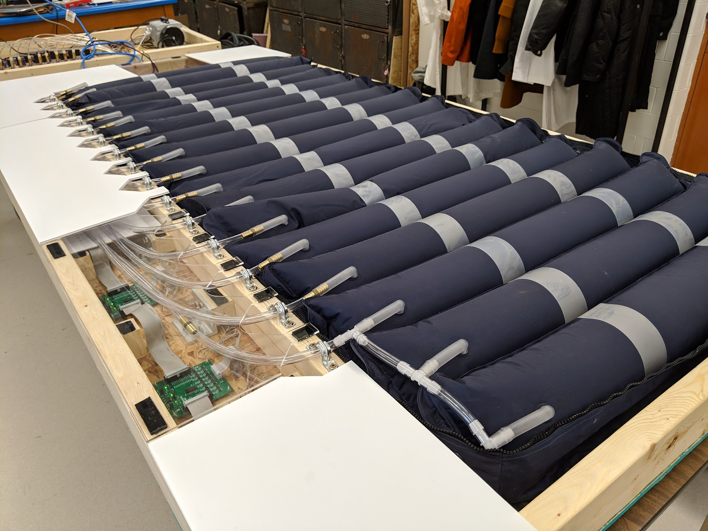
Controlling pressure
Today marked a major milestone in our development, our system can now control pressure! We developed a simple controller that iteratively equalizes pressure across a patient's body. Combined with our new software tooling, we can see these results in real time. With this feature, our system has fully come together!
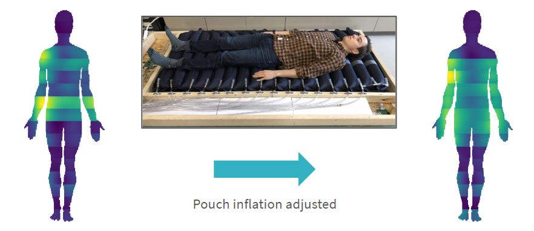
March 12, 2019
Closed Loop Control
We combined our hardware and software to develop a closed loop control system for relieving pressure.
March 8, 2019
Hardware Complete
We built the final component of our system and are now hardware complete!
March 3, 2019
Canadian Engineering Competition
Atlas Medical came third in the Innovative Design category at the Canadian Engineering Competition!
February 22, 2019
Pneumatics PCB
Our pneumatics PCB has arrived and is now fully tested!
January 31, 2019
Sensor Build Day!
Today we built our full-scale pressure sensor.
January 20, 2019
OEC Innovative Design Winners!
Atlas Medical won both the Innovative Design award and the Social Awareness award at the Ontario Engineering Competition.
January 15, 2019
First blog post
Atlas Medical will use this blog to provide progress updates and highlight development milestones.